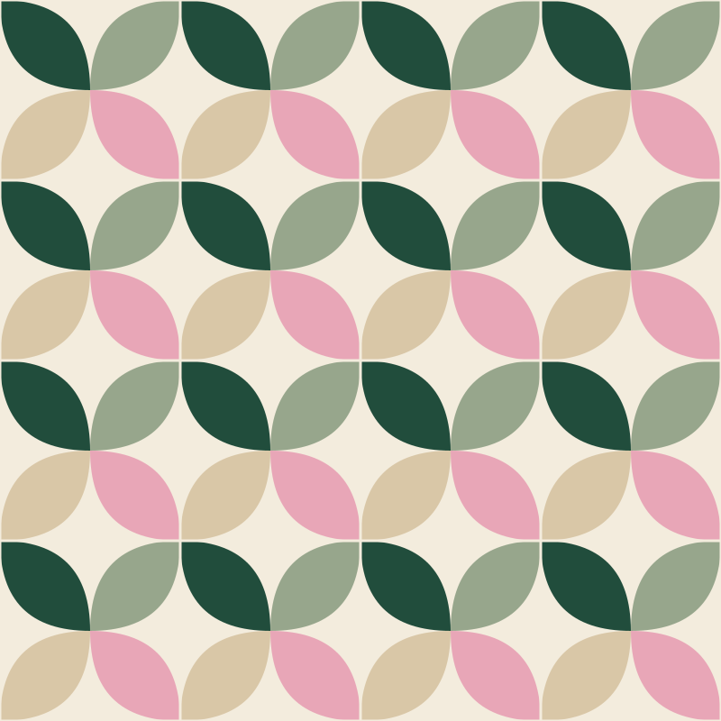
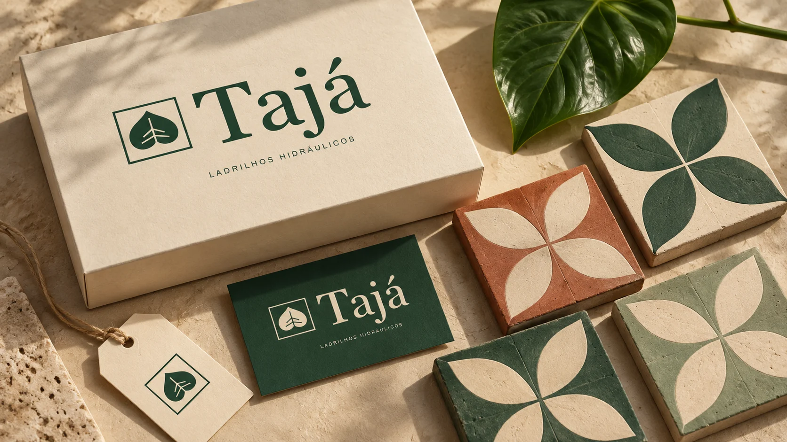

MATÉRIA · MEMÓRIA · NATUREZA
A natureza
desenha a casa.
Da folha ao ladrilho.
Do desenho ao lugar onde a vida acontece.


UM JARDIM EM CADA ENCONTRO.
PARA VOCÊ, MEU AMOR
Apresento, com muito amor,o trabalho da nossa vida.
A Tajá começa com uma folha, mas carrega um sonho nosso: transformar a beleza da nossa terra em lugares cheios de vida.
Em cada curva, cada cor e cada encontro, imaginei o que podemos construir juntos. Este é o primeiro desenho desse futuro — feito com carinho, para você explorar, brincar e sonhar comigo.
Com todo o meu amor.01 / DA FOLHA AO PISO
Tudo começa
com uma folha.
Curvas, nervuras, encontros de cor.
A natureza já sabe desenhar.
A folha encontra
o módulo.
O desenho botânico ganha uma moldura.
Um pequeno universo em um quadrado.
O encontro vira
um jardim.
Uma forma se repete, muda de direção
e descobre novos caminhos.
02 / ATELIÊ DE LADRILHOS
Seu desenho.
Seu jardim.
Escolha formas, misture cores e gire cada peça.
O próximo desenho é seu.
Toque em uma peça para editar. Use “Girar” para girar com um toque.
Em “Pintar áreas”, toque diretamente na parte do ladrilho que deseja colorir.
Combinações da Tajá
Jardim
Verde profundo, rosa folha e cal.
Desenhos autorais inspirados na natureza e nos lugares. Sua composição fica salva neste navegador.
03 / COR QUE VEM DA FOLHA
Toda folha guarda.
Um mundo de cor.
O verde continua sendo a raiz. O rosa dá uma nova expressão. Vinho desenha o contraste; lima acende pequenos pontos de luz. Cal, areia e argila mantêm a matéria por perto.
Da mesma natureza.
Infinitas possibilidades.
Toque em uma cor para copiar seu código.

MATÉRIA & MEMÓRIA04 / A MARCA NA CASA
Desenho para olhar.
Matéria para sentir.
Superfícies foscas, luz natural, textura presente. A Tajá aproxima a delicadeza da folha e a presença dos ladrilhos, em uma identidade feita de encontros.
Explore o guia da marcaVisualização conceitual da identidade.